13年前，海归精英团队初心启航，13年后，寅家科技以【全栈自研】的技术，助力驱动业务破界，产业升级，构建更多业务增长引擎，打造 “地面 + 低空 + 作业” 智能生态体系。
我们创新不止，三大产品矩阵持续升级：
一、VT-Pilot® 辅助驾驶系列
VT-AVM 全景环视
VT-APS 全场景智能辅助泊车
VT-FVC ADAS前视一体机
VT-Vulcan® 行泊一体系统
二、VT-Cockpit® 智能座舱系列
VT-CMS 电子外后视镜
VT-DMS 驾驶员监控系统
VT-E-Mirror 流媒体后视镜
VT-HUD 抬头显示
VT-Smart Lighting 智慧照明灯
VT-DVR 行车记录仪
三、VT-Camera 智能感知系列
我们步履不停，致力于将技术注入更多热门赛道，打造第二、第三业务增长极！
-牢筑【地面智能】护城河，夯实企业长期发展的第一引擎；
-挺进【低空经济】，“上天入地”、天地一体；
-布局【作业机器人】领域，助力打造智能作业场景的全新驱动力。
从地面到低空，从交通工具到工业智能设备，寅家的视野，始终投向未来。
寅家未来，将更加多元、更具竞争力！
2026年，寅家科技还将为行业带来哪些惊喜？
让我们“马”力全开，驶向未来！

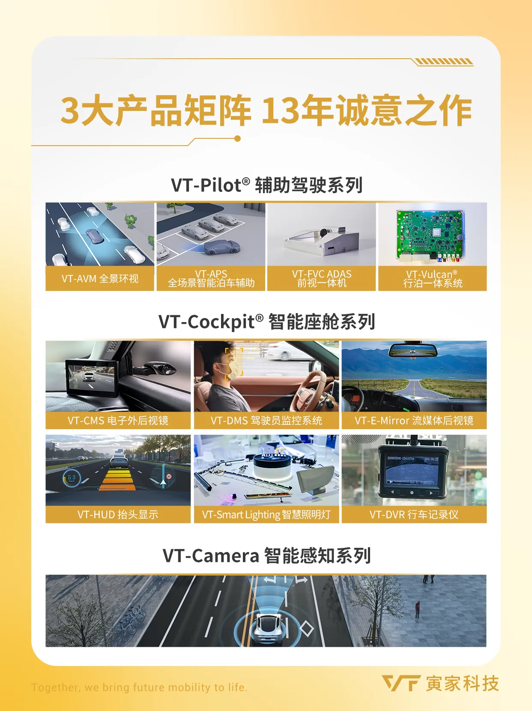
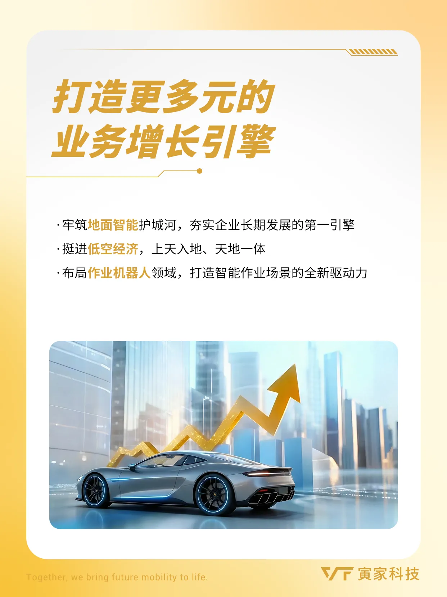
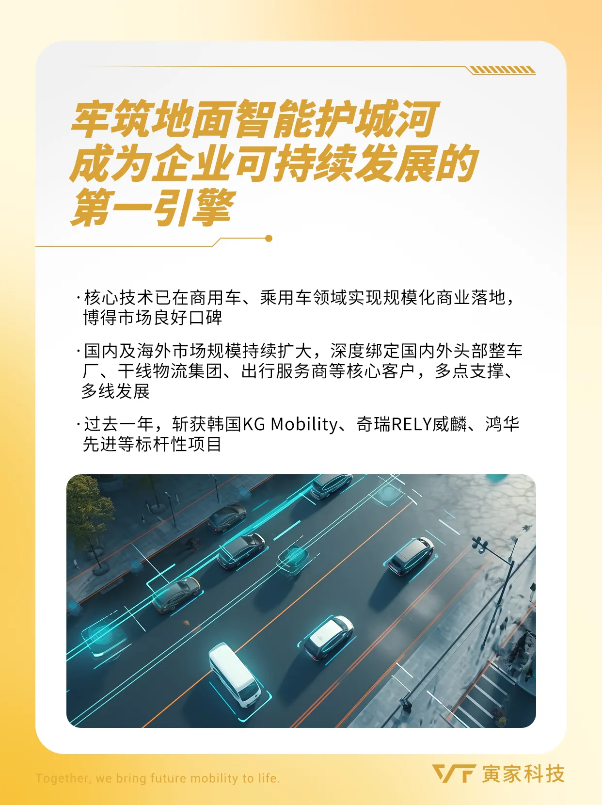
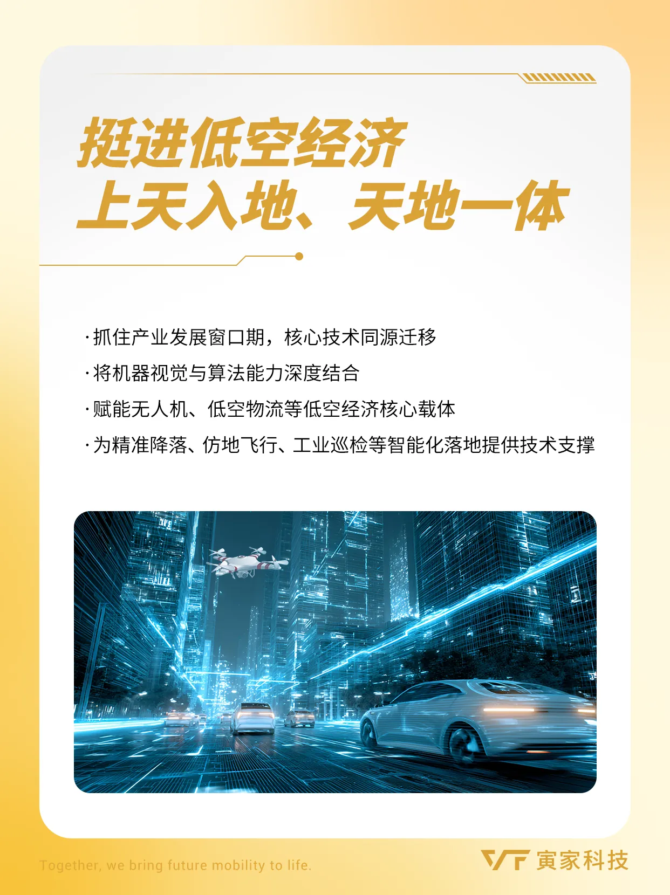
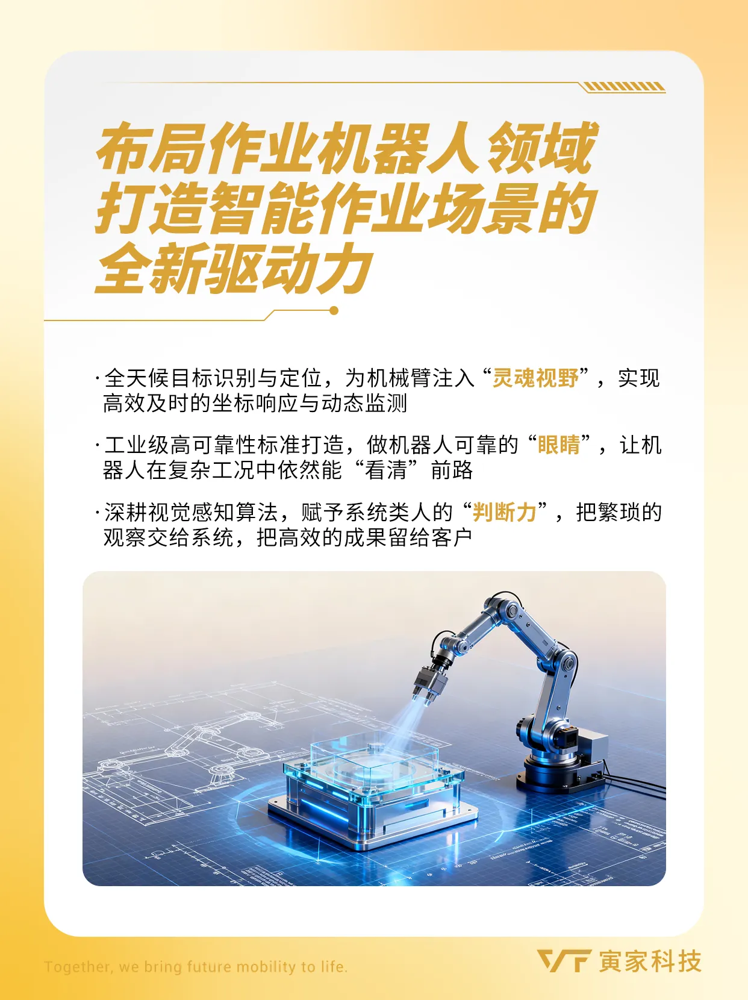
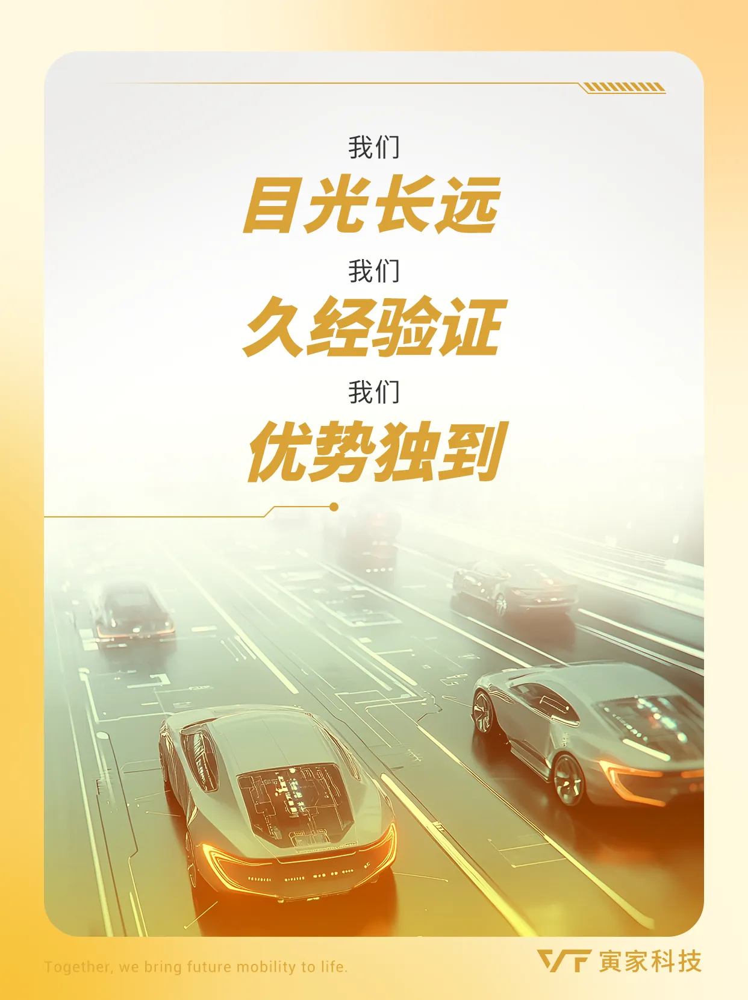
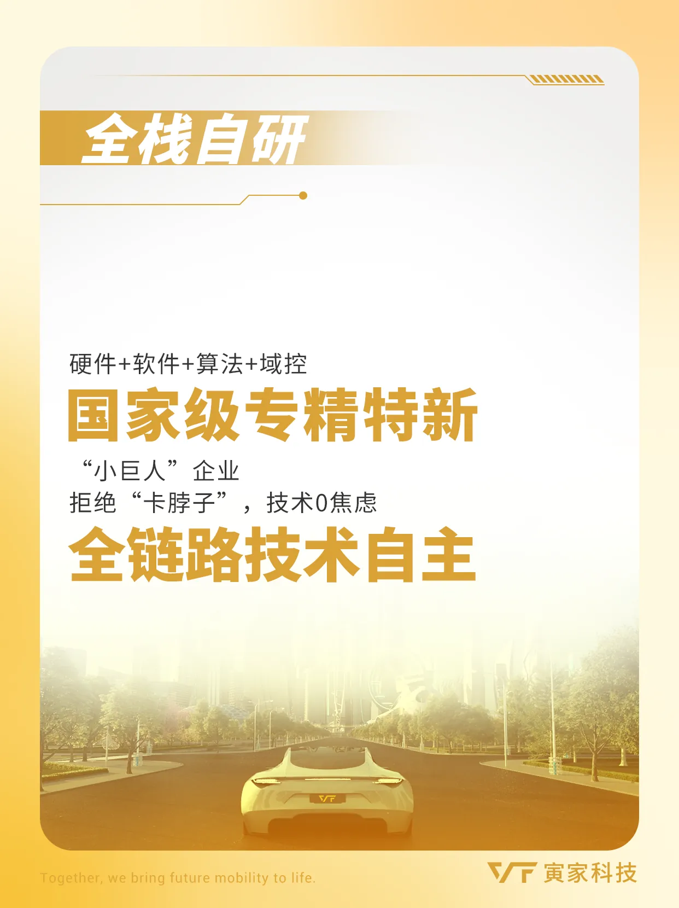
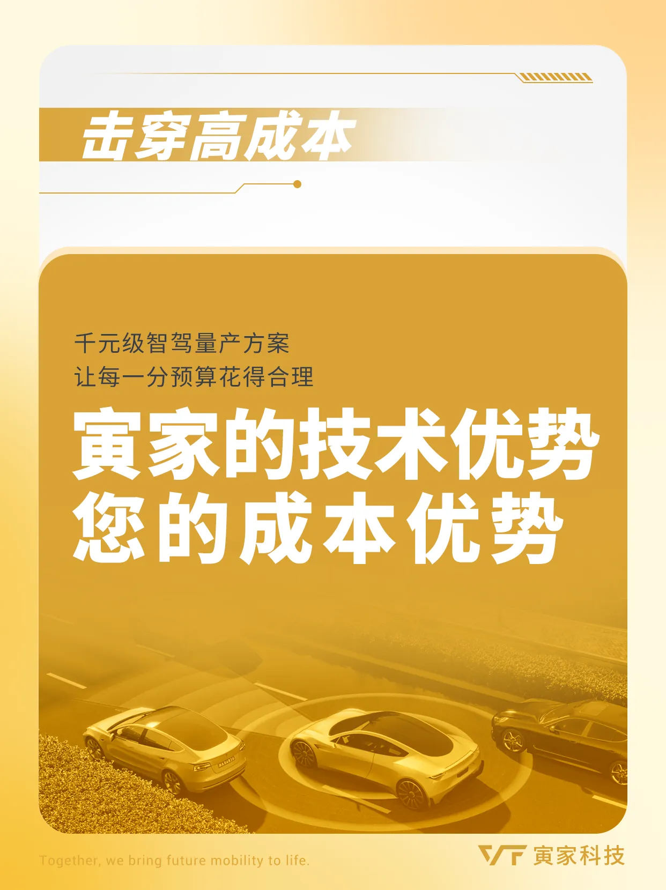
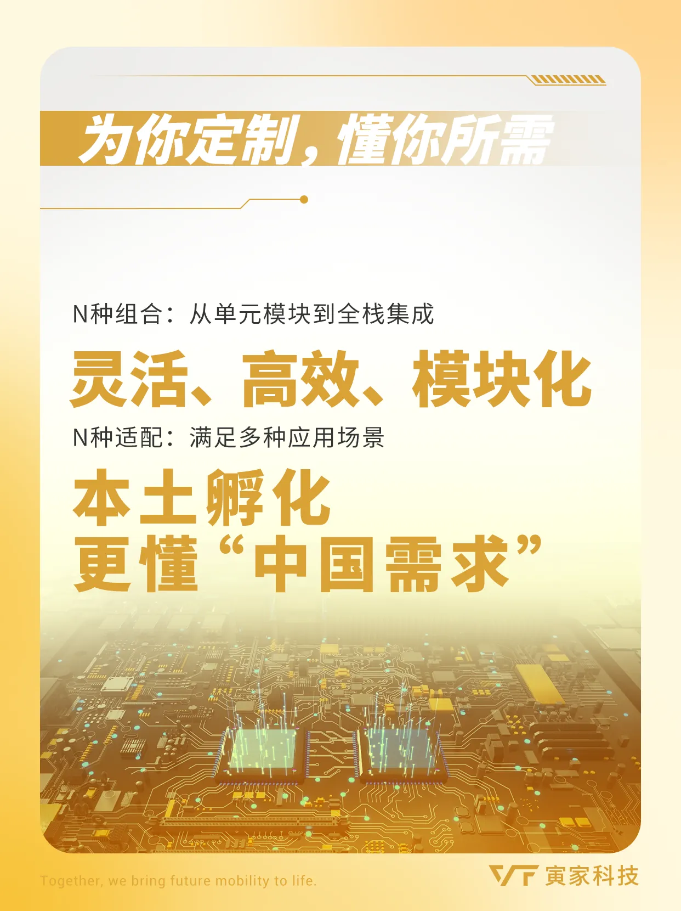
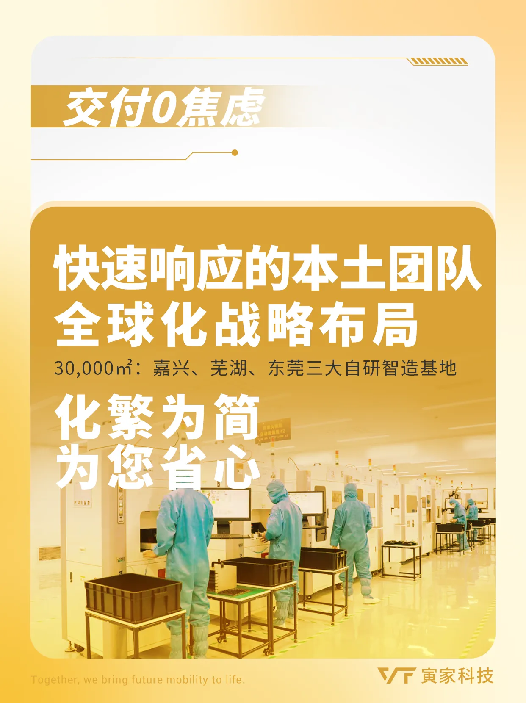
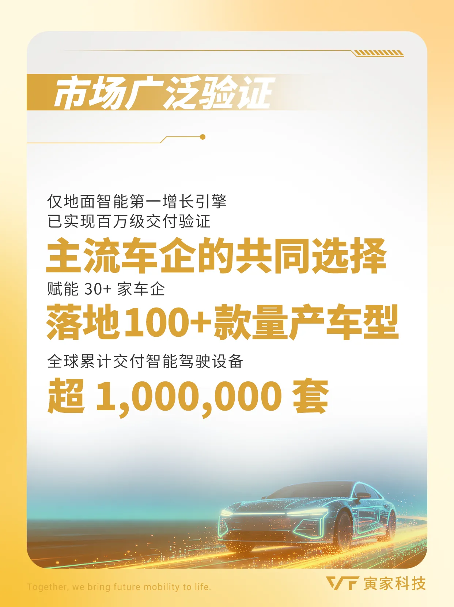